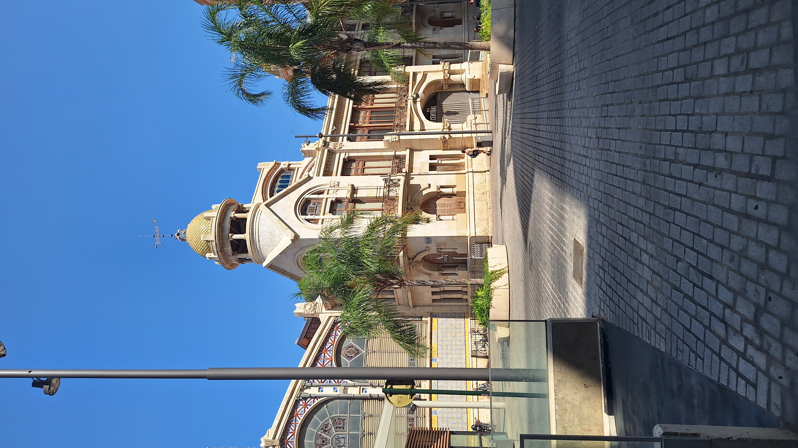
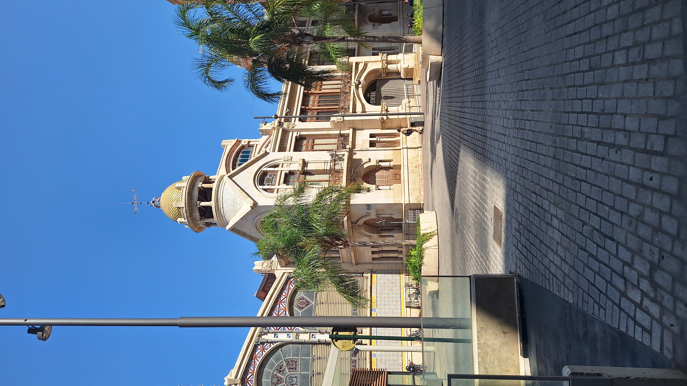
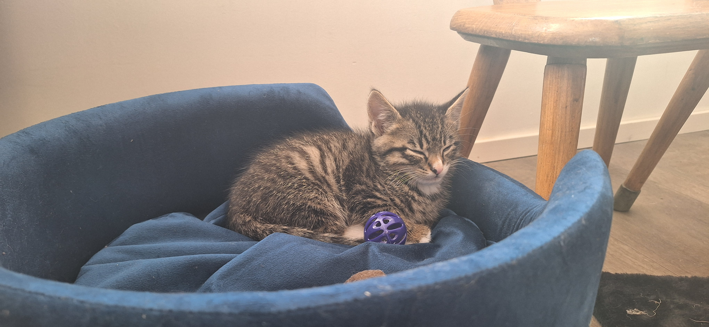
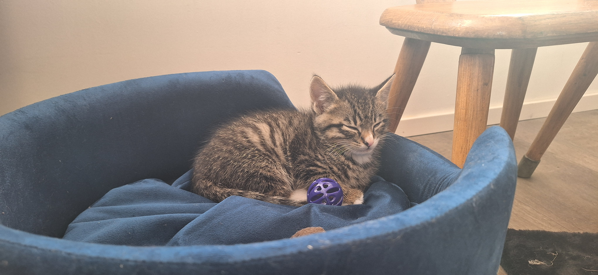

Startpagina
Wie ben ik
Hallo mijn naam is Sven en ik ben een leerling van het Harens Lyceum. Ik heb een enorme passie voor Programmeren en Computers, vandaar dat ik deze website heb gemaakt. Ik leef met mijn vader, moeder en mijn broertje in Yde. Ik heb een konijn genaamt Flappie. Ik ben nu 15 jaar.
Mijn vakantie
Ik ben deze zomervakantie was naar Spanje. Ik ben toen naar de stad Valencia gegaan. Ik heb daar veel bezocht zoals de Centrale Markthal, het Stadhuis, het Strand, en de winkel straat Carrer de Colón. Het weer daar was heerlijk. Het was best wel warm elke dag wel 30 graden.
Hobbies
Mijn passie voor Computers is dat ik mijn eigen computer heb gebouwd. We hebben onze eigen home server waar Home Assistant op draait. In mijn vrije tijd mag ik hier graag mee spelen. Mijn sporten zijn dat ik op Volleybal heb gezeten. Nu doe ik geen sport meer, omdat er niet meer genoeg mensen waren om een toernooi te spelen.
PC bouwen
Ik mag ook graag computers bouwen en designen. Ik heb zelf ook mijn eigen computer gebouwd. In mijn vrije tijd mag ik graag aan mijn computer zitten.
 


 
